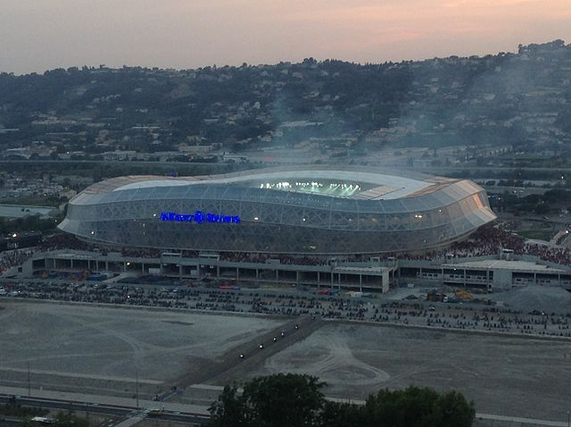

Allianz Riviera (Nice)
| Adresse | Nice, Boulevard des Jardiniers |
|---|---|
| Propriétaire | Ville de Nice |
| Construction | 2013 |
| Capacité | 35000 |
Le stade est de catégorie 3 dans le classement UEFA des stades. Son orientation est nord-sud et son terrain mesure 131 mètres sur 73.
Origine du nom
Le 6 juin 2010, Christian Estrosi annonce que le projet de nouveau stade porte désormais le nom d'« Olympic Nice Stadium ». Toutefois, il ne s'agit pas du nom donné au stade car celui-ci sera soumis à un contrat de parrainage négocié par Vinci. Au mois de mai 2012, l'assureur Allianz est pressenti. Le nom est finalement dévoilé le 23 juillet 2012 : le stade s'appellera Allianz Riviera, du nom de l'assureur allemand Allianz. Celui-ci versera en échange 1,8 million d'euros par an durant 9 ans.
Caractéristiques architecturales
La charpente mixte bois/métal couvrant les gradins avec son porte-à-faux de 46 m a été réalisée par le groupement FARGEOT Lamellé Collé (Vinci) et SMB. 4 000 m3 de bois, 6 000 pièces de lamellé collé et 3 500 tonnes de métal la composent. Elle est surmontée d'un tirant en acier sur lequel est posée une membrane précontrainte. Celle-ci est en éthylène tétrafluoroéthylène (ETFE) transparent pour la partie qui recouvre l'arrière des tribunes (la structure en bois est donc visible depuis l'extérieur du stade) ainsi que pour l'extrémité du toit des tribunes. Toutefois, la plus grande partie de ce toit est constitué d'une membrane précontrainte en PVDF (polyfluorure de vinylidène ou polychlorure de vinylidène) translucide ce qui assure la filtration de la lumière naturelle. L'entreprise Serge Ferrari, a fourni en couverture la membrane composite translucide Précontraint® 1202 S2 . Celle-ci assure le confort des spectateurs grâce à une lumière naturelle diffuse ainsi que leur protection en cas d’intempéries. Complément d’absorption acoustique dans les très hautes fréquences, elle participe également au contrôle de la réverbération sonore au cœur de l’enceinte sportive. 100% recyclables, les 13 600 m² de membrane s’inscrivent dans la démarche de respect environnemental souhaitée par la maîtrise d’ouvrage et par l’architecte Jean-Michel Wilmotte.
D'après Wikipedia